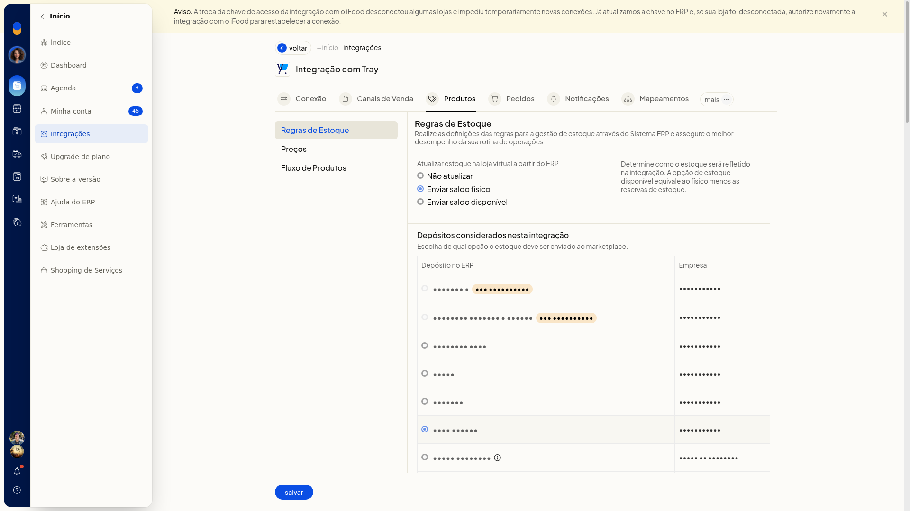
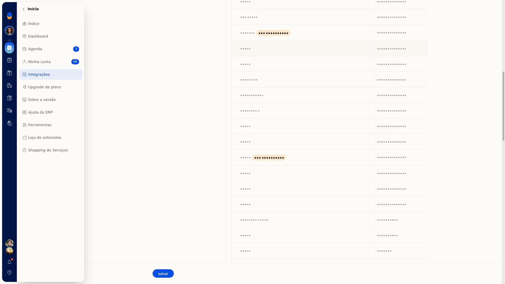
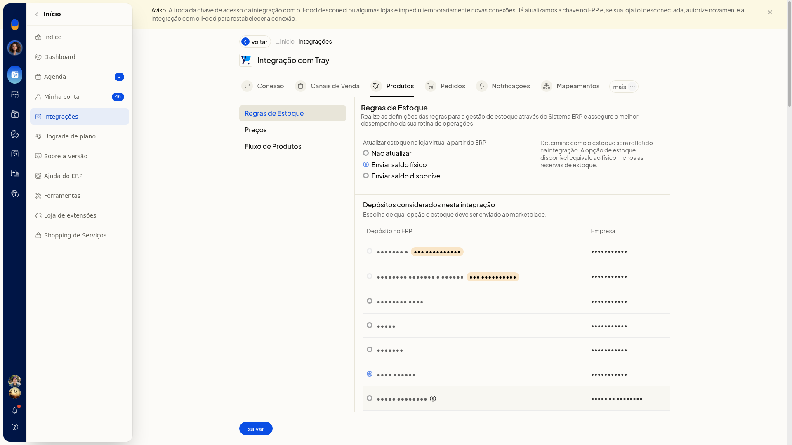
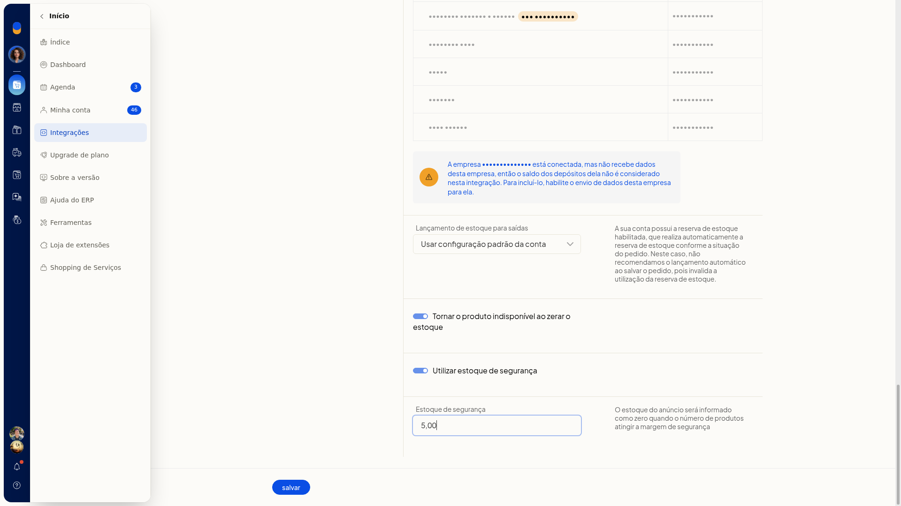

Sincronização de estoque com os canais
No ERP da Olist, você define qual saldo a loja virtual recebe a partir da integração conectada. Pode não atualizar a loja, enviar o saldo físico ou enviar o saldo disponível, que é o físico menos as reservas.
Você também escolhe os depósitos que entram nesse saldo e, se quiser, uma margem de estoque de segurança. A reserva de estoque já está habilitada na conta e ocorre automaticamente conforme a situação do pedido.
Pré-requisitos
- A integração da loja virtual precisa estar conectada.
- Os depósitos que entram no saldo precisam existir. Linhas marcadas como não habilitado não entram no saldo da integração.
- Depósitos de outra empresa do grupo só entram se o envio de dados desta empresa para ela estiver habilitado.
Importante
- Com a reserva habilitada, não escolha Automático ao salvar o pedido em Lançamento de estoque para saídas. Esse lançamento invalida a reserva.
- O saldo disponível enviado à loja é o físico menos as reservas.
- O saldo de depósitos de uma empresa conectada que não recebe dados desta empresa fica de fora até você habilitar esse envio.
- Com estoque de segurança, o anúncio é informado como zero quando a quantidade atinge a margem.
- Em Configurações > Configurações ERP > Suprimentos > Configurações de estoque, desmarcar Contratar automaticamente extensão de limite de sincronização de estoque adicional pode bloquear o envio de estoque se o limite do plano for excedido.
Instruções
-
Acesse Início > Integrações e, na integração da loja virtual conectada, clique em gerenciar.
-
Acesse Produtos > Regras de Estoque.
-
Em Atualizar estoque na loja virtual a partir do ERP, escolha Não atualizar, Enviar saldo físico ou Enviar saldo disponível. O campo não é obrigatório. Enviar saldo disponível envia o físico menos as reservas.

-
Na tabela Depósito no ERP | Empresa, selecione os depósitos que entram no saldo. Todos Próprios reúne os depósitos de todas as empresas do grupo. Depósitos marcados como não habilitado ficam de fora.


-
Em Lançamento de estoque para saídas, mantenha Usar configuração padrão da conta ou escolha Manual, Automático ao autorizar a nota fiscal, Automático ao salvar a nota fiscal, Automático ao salvar o pedido ou Automático ao marcar pedido como enviado. O campo não é obrigatório. Não use Automático ao salvar o pedido, porque invalida a reserva.
-
Marque Tornar o produto indisponível ao zerar o estoque se quiser que o produto fique indisponível na loja quando o estoque zerar. O campo não é obrigatório.
-
Marque Utilizar estoque de segurança para exibir Estoque de segurança. Informe a margem no formato de número com vírgula decimal, como 5,00. O campo não é obrigatório e só aparece com Utilizar estoque de segurança marcado. O anúncio passa a ser informado como zero quando o estoque atinge essa margem.

-
Clique em Salvar para gravar as regras da integração.
Resultado
A integração fica pronta para refletir na loja o saldo físico, o saldo disponível ou nenhum saldo, com os depósitos e a margem escolhidos.
Informações adicionais
Todos Próprios reúne depósitos do grupo
Todos Próprios considera depósitos de todas as empresas do grupo. Confira o detalhamento na tabela.